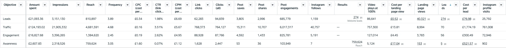
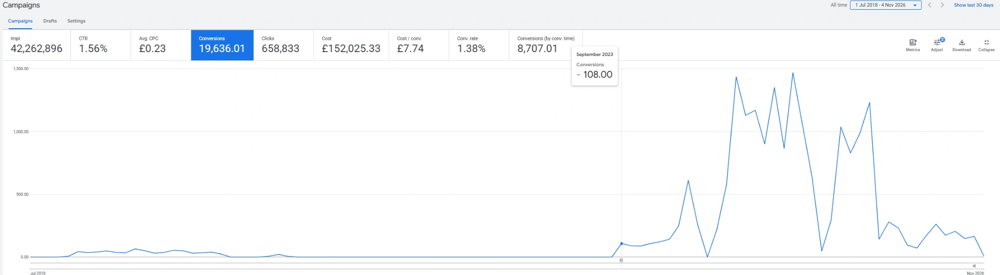
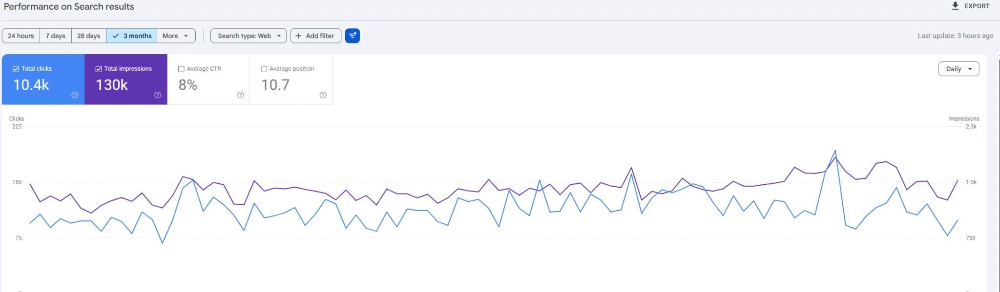

People cannot find you.
Your customers are searching. They just keep finding someone else. We help close that gap.
You work hard to build your business. Your marketing should work just as hard. ARAT brings paid ads, SEO, content and smart websites together to help the right people find you and take action.

When your message, audience and tracking work together, every decision gets easier.
Your customers are searching. They just keep finding someone else. We help close that gap.
Views look good on a report. Enquiries and sales make a difference to the business.
If a campaign cannot tell you what is working, it is harder to decide what to do next.
Choose the help you need today. Add more when the business is ready. Every service connects back to a real goal.
Show up when people are ready to buy. Search, Performance Max and measurable intent.
Explore this service 02 / PAID MEDIABuild demand with Meta Ads that connect creative, audience and action.
Explore this service 03 / PAID MEDIANative video ideas, better hooks and creative-led advertising for modern audiences.
Explore this service 04 / STRATEGYConnect channels, audiences, budgets and decisions into one growth plan.
Explore this service 05 / MEASUREMENTKnow what happens after a click. Track the actions that matter.
Explore this service 06 / SEARCHHelp the right customers find your business through useful search-led content.
Explore this service 07 / SOCIAL & CONTENTA more consistent social presence with a reason behind every post.
Explore this service 08 / SOCIAL & CONTENTClear words. Strong visuals. More reasons to remember your brand.
Explore this service 09 / WEB & BRANDBeautiful websites that load well, explain the offer and help visitors act.
Explore this service 10 / WEB & BRANDA clearer identity and message that your customers can recognise and trust.
Explore this serviceCustomers in Kathmandu, Bhaktapur and Lalitpur do not all buy in the same way. We start with the people you want to reach. Then we shape the message, channel and budget around them.
ARAT is based in Madhyapur Thimi, Bhaktapur. We work with businesses across Nepal and bring experience from international campaigns too.

ARAT was built around a simple belief: small and growing businesses deserve thoughtful marketing too.
I am Yogesh Parajuli. My work brings together Google Ads, Meta Ads, TikTok campaigns, SEO, creative planning and performance reporting. I have worked on marketing projects linked to Nepal, Australia and the UK.
Our approach is direct. We ask better questions. We show the work. We learn from the numbers. And we keep the message human.
Meet the founderThese are selected project screenshots and experience summaries. We explain the context and limits rather than inventing outcomes.

Real reporting evidence from an Australia-related paid advertising project. Creative, delivery and performance all need context.
See the project context
Search campaigns work best when user intent, spend and outcomes can be reviewed in the same conversation.
View selected evidence
A Search Console snapshot used to look beyond rankings and see how a site is being discovered over time.
Explore Nepal workScreenshots are historical snapshots supplied with the portfolio; reporting periods and accounts vary. They are not projections or guaranteed client outcomes.
Every business is different. The questions we ask stay practical.
We listen, review the offer and understand who needs to care.
We prioritise channels, creative and numbers you can act on.
We create, launch and test the essentials with care.
We look at what changed and decide what deserves the next pound or rupee.
Behind each campaign is real planning. Research. Creative reviews. Technical checks. Small decisions made carefully.
We work across strategy, advertising, content, design and web development. That means you do not have to explain your business from zero to five different people.
We work with modern advertising, analytics, SEO, creative and development workflows. Tool knowledge is not a claim of official partner status.
Platform names identify experience areas. ARAT does not claim official Google, Meta or TikTok partner accreditation without a published credential.
No complicated language. Just better answers to everyday marketing questions.

Learn to check intent, landing pages and conversion quality.
Read the guide
Simple structure. Better headings. Useful local search content.
Read the guide
Estimate CPC, CPL, ROAS and SEO revenue potential.
Explore the toolsNo forced package. No invented promise of overnight results. Every scope starts with a real business need.
For a business that needs a clear foundation.
For teams ready to test ads and creative with more purpose.
For brands connecting search, social, website and data.
Scope examples only. Final deliverables and fees are agreed in writing after discovery.
ARAT is founder-led. We connect customer understanding, creative execution and measurement. We recommend a practical scope instead of pushing every channel.
Yes. We work to make the scope realistic for your stage and budget. The right starting point may be a focused audit, one campaign or a simple website improvement.
Yes. Much of the discovery, planning, campaign work and reporting can be handled remotely across Nepal and for suitable international projects.
Yes. We can connect paid search, social advertising and organic search when the strategy calls for it.
No. Honest marketing cannot guarantee exact sales or search rankings. We set useful goals and report the results we can verify.
Send a short growth brief through our contact page. You can choose services and open a prepared enquiry directly in WhatsApp.
You do not need a perfect brief. Just tell us what your business does and what you want to improve.